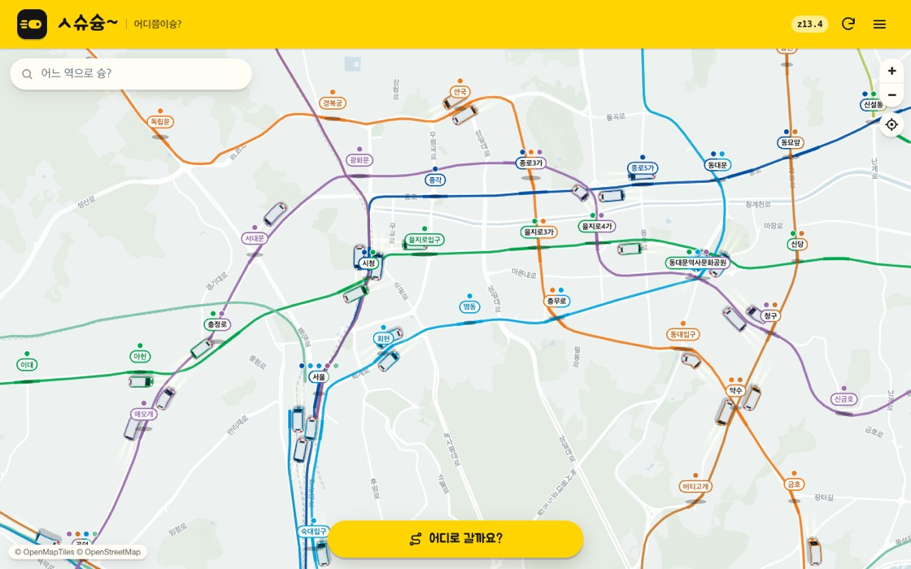
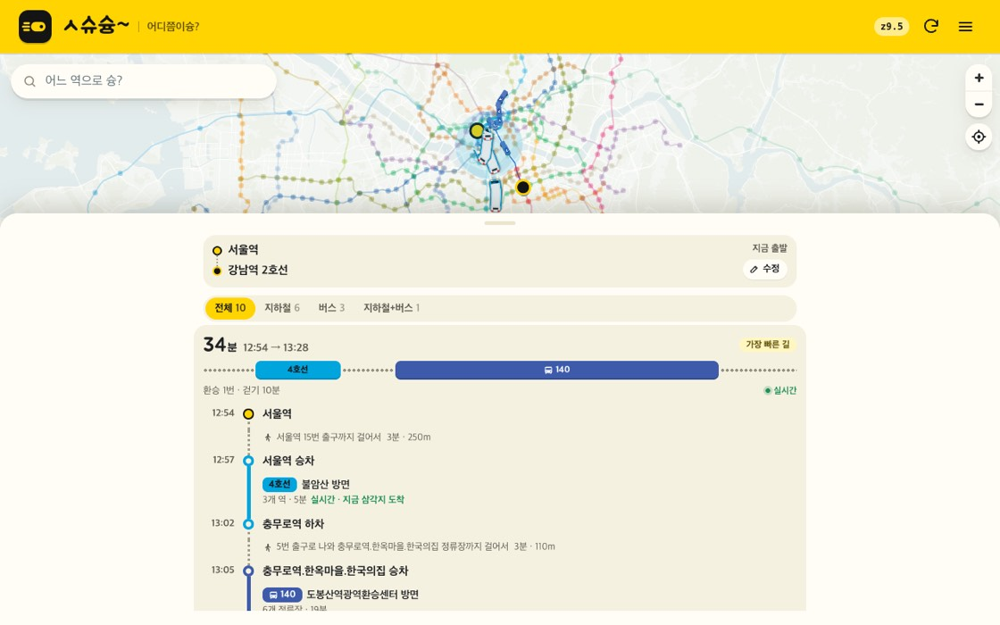
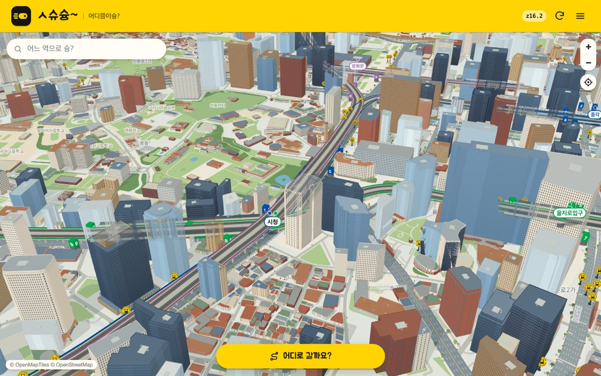
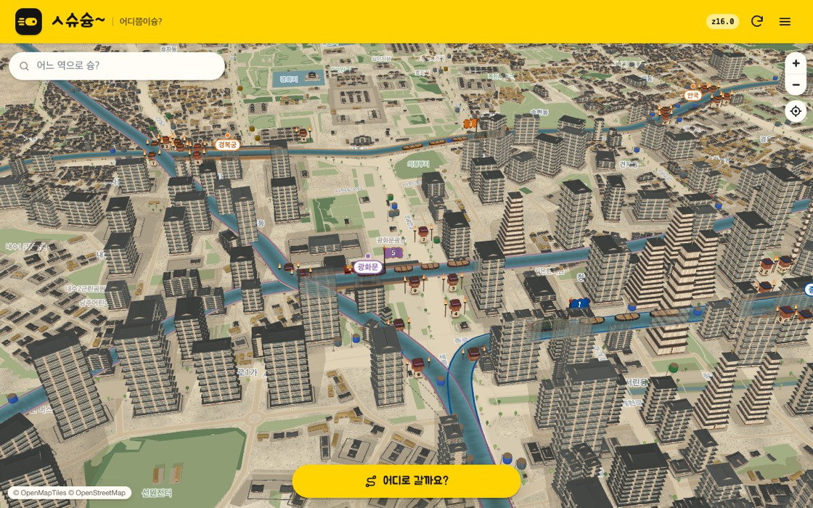

Where's my train?A live map of where Seoul's subway trains are right now
Watch trains move along the real tracks on the map. Save the trips you take often as tickets, and see the route and transfers for your departure time at a glance.
Open the map Opens right in your browser — nothing to install. The map is in Korean.
Tickets — your usual trip, timed to when you ride
Save a trip you take at the same time every day, like your commute, as a single ticket.
- Set the trip and the timeChoose a start, a destination, a departure time and the days you ride. You can add a stop along the way, too.
- Pick a route for that timeSyung finds routes for that time on your next riding day. Choose one and it goes on the ticket.
- Flip the ticketThe back shows where you transfer, when you leave and which days you ride, and tickets for today are marked "Today". Use "View on map" to draw the trip on the map.
Tickets are available after you sign in.
What you can do with Syung
To make waiting for the subway a little less frustrating.

Route search
Combines subway, bus and walking and shows the fastest routes first. Where live data is available, it also shows where the train you'll take is right now.

3D city
In 3D city mode buildings rise in 3D and trains run between them.

Many modes
Change the mood of the map with modes such as Joseon, Roller coaster and Retro, or Greek, Dutch, Paris and Egypt scenery.
And more
- Jump straight to a station by name
- Tap a station to see the trains coming in
- Light and dark screens that follow the time of day
Frequently asked questions
How accurate are the train positions on the map?
Live train data runs about 20 seconds to 1 minute behind reality, and train positions update every 15–25 seconds. Syung fills the gap by moving trains along the tracks, so a train on the map can be slightly off from the real one.
What is a ticket?
A ticket is a saved trip you take often. Pick a start, a destination, a departure time and the days you ride, and Syung finds routes for that time on your next riding day; the route you choose is kept on the ticket. Flip the ticket to see where you transfer and when you leave, and tickets for today are marked "Today".
Do I need to sign in?
No. The map and route search work without signing in. Only features that save things for you, such as tickets, need you to sign in.
Where does the data come from?
Lines, stations and timetables come from the KTDB (Korea Transport Database, The Korea Transport Institute) public transit GTFS, live train positions and arrivals from the Seoul Open Data Plaza, and the base map and track shapes from OpenStreetMap contributors (ODbL) and OpenMapTiles.
Does it work on my phone?
Yes. It opens right in the browser on phones and computers — nothing to install.